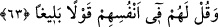

yaptıklarımız yüzünden bizi sorumlu tutma, “diye yemin ederek” işledikleri
kabahatlerden dolayı özür dilemek için “sana gelirler!”
Bu âyet, yaptıkları yüzünden münâfıkları tehdit etmekte ve pişmanlığın fayda
vermeyeceği, özürlerinin yarar sağlamayacağı o günde pişman olacaklarını
göstermektedir.
63- Onlar Allah’ın, kalplerindekini bildiği kimselerdir; onlara aldırma, kendilerine
öğüt ver ve onlara, kendileri hakkında tesirli söz söyle.
“Onlar” yâni münâfıklar “Allah’ın kalplerindeki” nifâkı “bildiği kimselerdir.” Bunu
gizlemek ve yalan yere yemin etmek onları azaptan kurtarmaz. “Onlara aldırma”
mazeretlerini kabul etme, duâ ederek onları ferahlatma. “Kendilerine öğüt ver” onları
nifaktan ve hileden vazgeçirmeye çalış. “Ve onlara kendileri hakkında tesirli söz
söyle.” Onlara habis nefisleri ve Allah’ın bildiği şerlerle yoğrulmuş bulunan kalpleri
hakkında yâhut da yanlarında başka kimse olmadan yalnız onlara nasîhat ederek tesirli,
maksada tam olarak ulaştıracak, nasîhatın gayesine uygun söz söyle. Çünkü gizli yapılan
nâsîhat daha faydalıdır. Tesirli söz şöyle olur: “Şüphe yok ki Allah, sizin
gizlediklerinizi ve kalplerinizde olanı bilir. Onu gizlemenin size bir faydası
olmayacaktır. Öyleyse nefislerinizi ıslâh edip kalplerinizi inkar ayıbından temizleyin ve
nifak hastalığından tedâvî edin. Aksi taktirde, Allah Teâlâ açıkça şirk koşanlara
indirdiği azâbın daha kötüsünü, daha şiddetlisini size de indirebilir.” Belki böyle bir
öğüdün onlara faydası dokunur.
[62]. bk. Zemahşerî, el-Keşşâf; Süyûtî, ed-Dürrü’l-mensûr